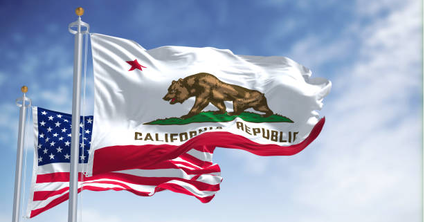

History
|
California was colonized by the Spanish in the 18th century, became part of Mexico, and joined the US in 1850. The Gold Rush of 1849 transformed its economy and population. Today, California is a hub for entertainment, technology, and agriculture, with iconic locations like Hollywood and Silicon Valley. |

California State Flag
|